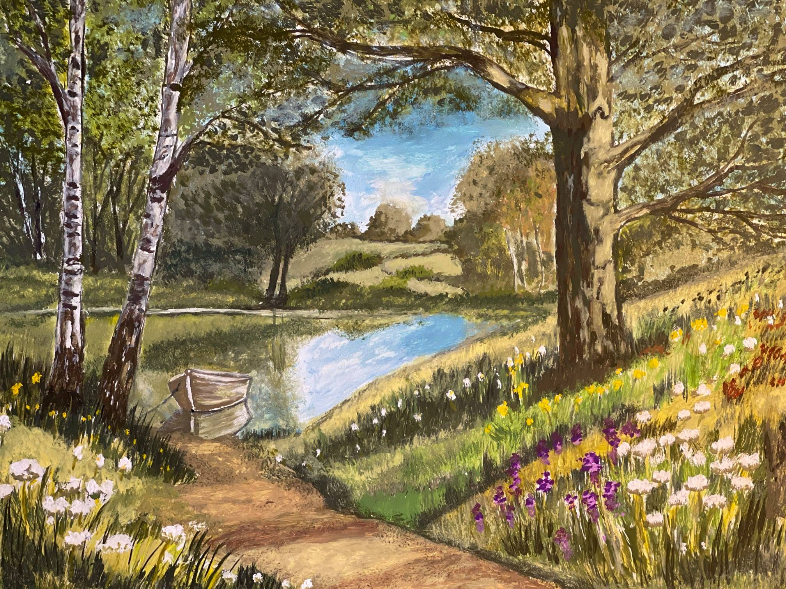
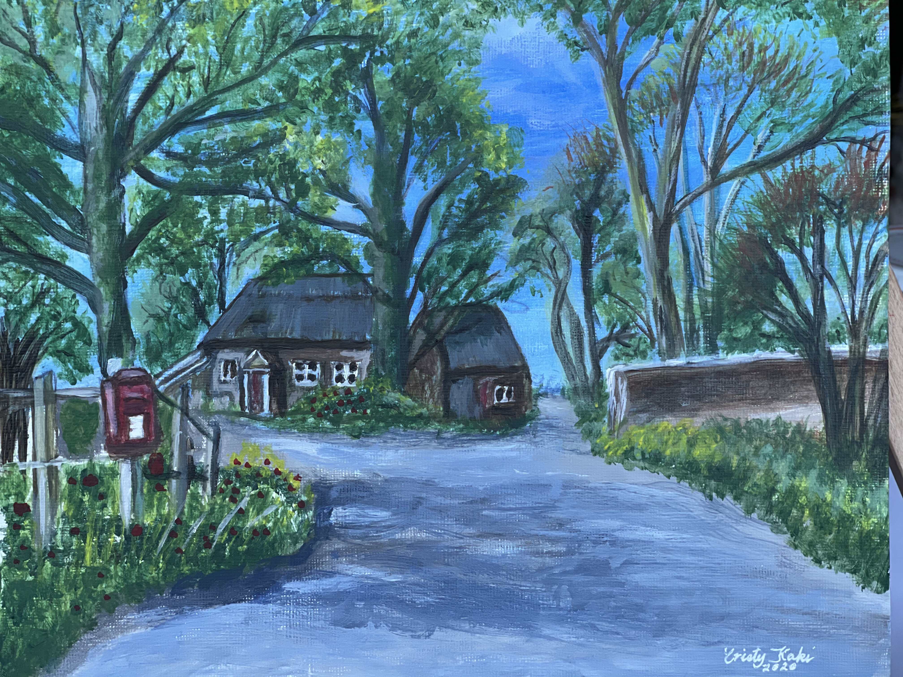
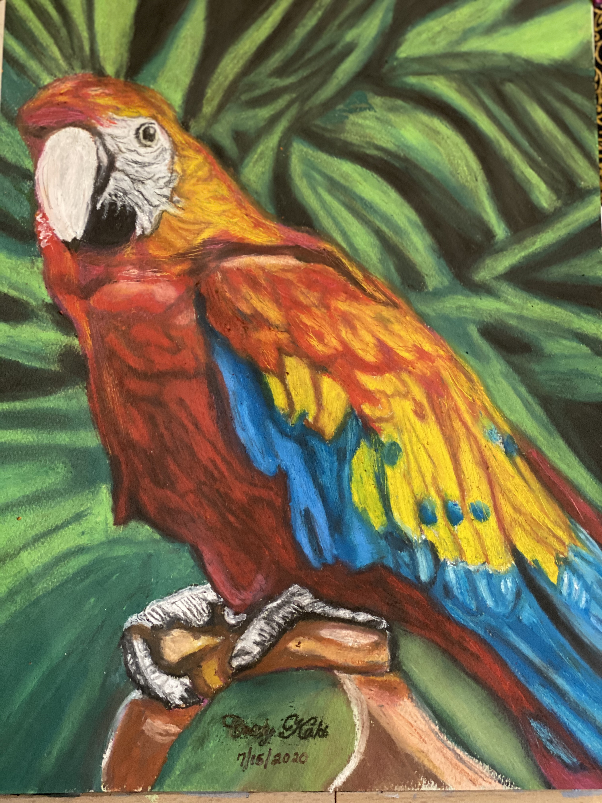
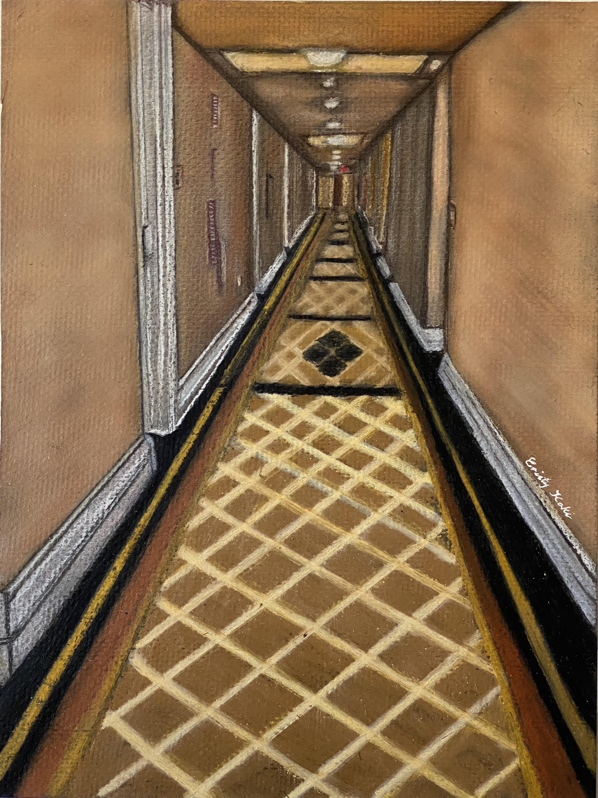
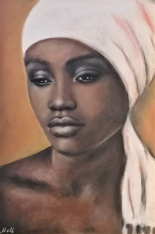
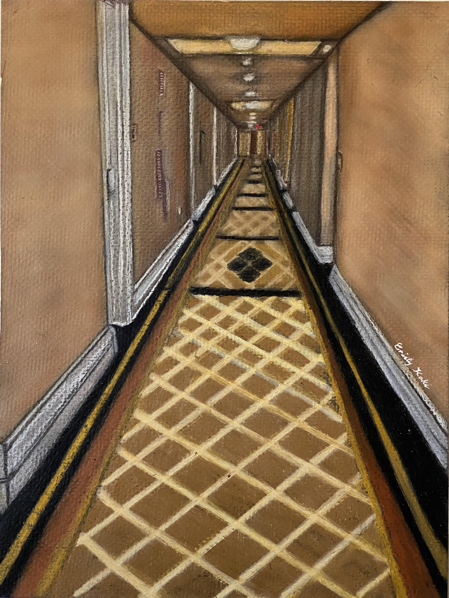
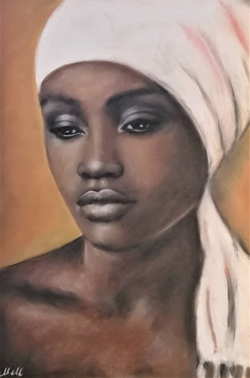

Countryside by Cristy Kaki, 11" x 16" Gouache on canvas, © 2021

Rural by Cristy Kaki, 9" x 12", Acrylic on canvas, © 2020

Paradise Bird by Cristy Kaki, 9" x 12", Mixed media, © 2020
 Poodle Dogs by Cristy Kaki, Unknown dimensions, Unknown media, © 2020

Hotel Hallway by Cristy Kaki, 24" x 18", Acrylic on canvas, © 2020

Portrait of a Black Woman by Cristy Kaki, Unknown dimensions, Unknown media, © 2020
Poodle Dogs by Cristy Kaki, Unknown dimensions, Unknown media, © 2020

Hotel Hallway by Cristy Kaki, 24" x 18", Acrylic on canvas, © 2020

Portrait of a Black Woman by Cristy Kaki, Unknown dimensions, Unknown media, © 2020